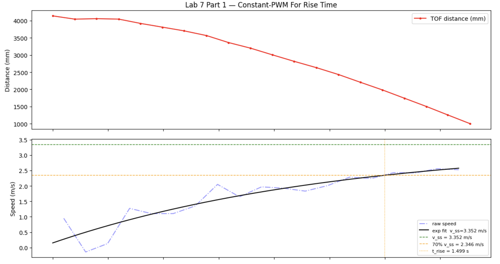
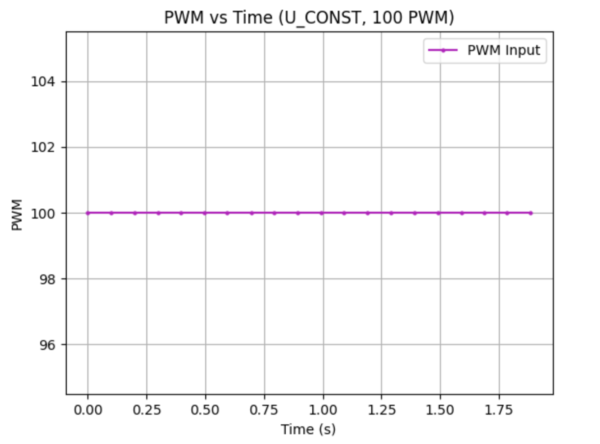
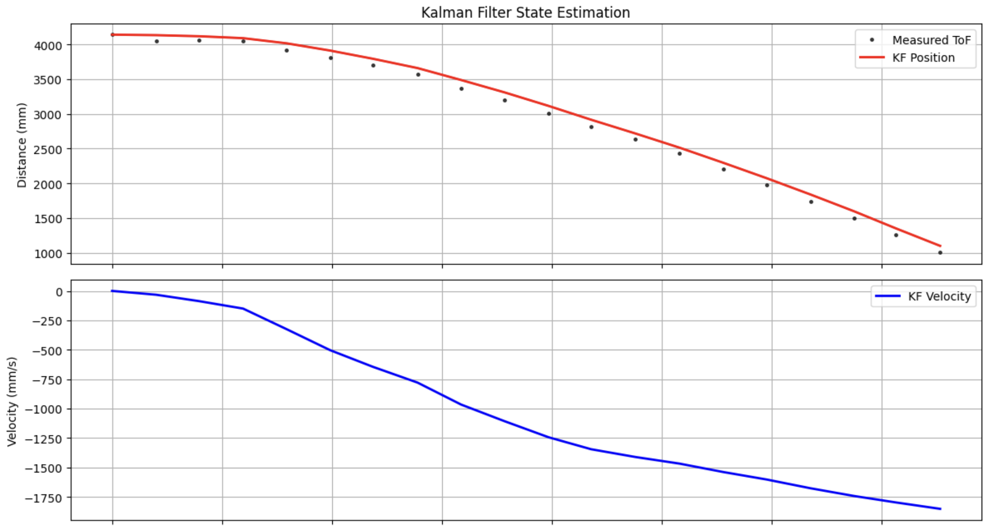
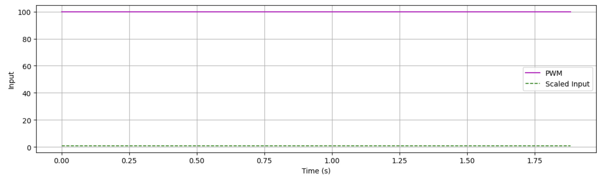
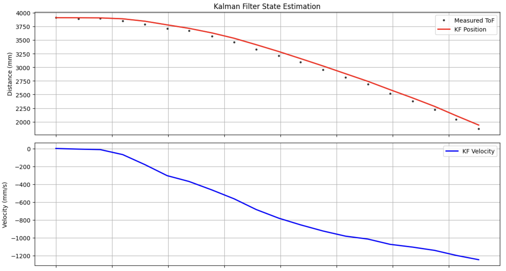
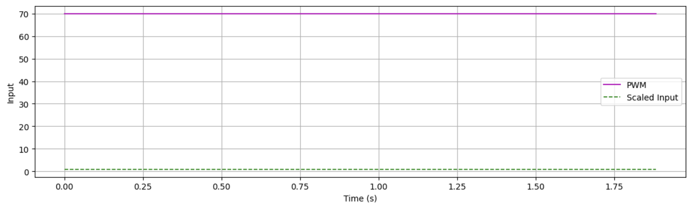

Step 1: Estimating Drag and Momentum
Computing Speed via Finite Difference
I wrote a function called U_const on the Artemis that drove the car at a constant 100 PWM toward a wall while logging ToF distance and timestamps. I placed foam against the wall and used active braking to stop the run before impact. 100 PWM was chosen to stay in the same range used in Lab 5. Speed was computed from the ToF readings using a simple finite difference between samples:
dt = np.diff(t_s)
dd = np.diff(dist)
speed = dd / dt
I ran a couple of different step responses and used the speed traces to fit an exponential and pull out the steady-state speed and rise time.
Exponential Fit and Steady-State Extraction
I fit the speed data to the exponential model below, where the steady-state speed v_ss is the constant term c as the curve levels off:
From the first-order system model, at steady state v̇ = 0, which lets d be computed directly from v_ss:
With 100 PWM normalized to u = 1, d came out to 0.29837.
Rise Time and Mass Estimation
To find m, I used the 70% rise time from the step response. I identified where the speed hit 70% of v_ss and plugged that time and speed into the step response formula to solve for m:
The full results from the 100 PWM run are shown in the table below.
| Parameter | Value |
|---|---|
| Step input (u) | 100 PWM → normalized to 1 |
| Steady-state speed (vss) | 3.3515 m/s |
| Rise percentage used | 70% |
| Rise time (tr) | 1.499 s |
| Estimated drag (d) | 0.29837 |
| Estimated mass (m) | 0.37148 |
| A[1,1] = −d/m | −0.8032 s−1 |
| B[1,0] = 1/m | 2.6919 m/s² |
Step Response Graphs
The graphs below show the ToF distance, computed speed, and motor input over time for the 100 PWM run.


Step 2 & 3: Kalman Filter Initialization and Implementation (Python)
Using the d and m values from Step 1, I built the A and B matrices and discretized them using the average dt over the step response run. I set C = [1, 0] because the ToF measures positive distance directly and that is the only thing being measured. The state vector was initialized from the first ToF reading with zero initial speed. I started with sigma1 = 0.1 to reflect low trust in the model's position estimate, sigma2 = 100 since speed is never directly measured and has high uncertainty, and sigma3 = 50 for the ToF sensor noise. All of this setup and the Kalman Filter function are in the block below.
A = np.array([[0, 1], [0, -0.8032]])
B = np.array([[0], [2.6919]])
dt = 0.0991578947
C = np.array([1, 0]) #because I measure distance from the wall as a positive and that is the only measurement
x = np.array([[tof[0]], [0]]) #this takes from the PID notification handler from lab 6, is positive bc
n = 2
Ad = np.eye(n) + dt * A
Bd = dt * B
sigma1 = 0.1 #tof sensor variance, lower trust in my sensor
sigma2 = 100 #speed
sigma3 = 50 #sensor noise
sigu = np.array([[sigma1**2, 0], [0, sigma2**2]]) #assume no correlation
sigz = np.array([[sigma3**2]])
# implementing KF based on design from lecture
def KF(mu, sigma, u, y):
mu_p = A.dot(mu) + B.dot(u)
sigma_p = A.dot(sigma.dot(A.transpose())) + sigu
sigma_m = C.dot(sigma_p.dot(C.transpose())) + sigz
kkf_gain = sigma_p.dot(C.transpose().dot(np.linalg.inv(sigma_m)))
y_m = y - C.dot(mu_p)
mu = mu_p + kkf_gain.dot(y_m)
sigma = (np.eye(2) - kkf_gain.dot(C)).dot(sigma_p)
return mu, sigma
The sigma values determine how much the filter trusts the model versus the sensor. If sigma3 is too small the filter ends up mostly passing raw ToF data through; if sigma1 and sigma2 are too small it over-trusts the model and drifts from the measurements. I iterated on the values by comparing the filter output to the raw data until the estimate tracked well without just copying the noise. Output graphs for 100 PWM and 70 PWM steps are below.




Closed Loop Kalman Filter
With the filter validated in Python, I ported it to Arduino inside the KPID case to run closed-loop position control in real time. The key design goal was to keep the control loop running as fast as possible rather than stalling and waiting for the ToF sensor. Every iteration of the loop runs a KF predict step unconditionally. If new ToF data is available the filter performs a full measurement update and corrects the estimate; if not, it simply propagates the prediction forward, effectively interpolating the robot's position between sensor readings using the motion model. The PID controller then acts on the KF estimate rather than the raw sensor value, giving it a smooth, high-rate position signal regardless of when the hardware delivers a measurement.
One hardware issue that came up during tuning was that the hard stop (car.kill()) caused a consistent left-turning tendency on braking, which made it difficult for the controller to settle accurately. Switching to the soft stop (car.fkill()) in the deadband eliminated this and allowed the car to stop straight.
Arduino Implementation
The filter is seeded from a blocking ToF read before the loop starts, ensuring kf_mu holds a real distance rather than zero when the PID first evaluates. Inside the loop, the predict–update structure mirrors the Python implementation exactly:
// seed KF from first real ToF reading
tof1.startRanging();
while (!tof1.checkForDataReady()) { delay(1); }
int first_tof = tof1.getDistance();
tof1.clearInterrupt();
tof1.stopRanging();
Matrix<2,2> kf_sigma = {100, 0, 0, 100};
Matrix<2,1> kf_mu = {(float)first_tof, 0};
tof1.startRanging();
while (millis() - start_ms < (unsigned long)runtime_ms) {
// KF predict (runs every iteration)
Matrix<1,1> kf_u = {(float)last_pwm / 100.0};
Matrix<2,1> mu_p = Ad * kf_mu + Bd * kf_u;
Matrix<2,2> sigma_p = Ad * kf_sigma * ~Ad + su;
// KF update — only if ToF data is ready, never stall
tof_ready = tof1.checkForDataReady();
if (tof_ready) {
tof_value = tof1.getDistance();
tof1.clearInterrupt();
tof1.stopRanging();
tof1.startRanging();
Matrix<1,1> kf_y = {(float)tof_value};
Matrix<1,1> sigma_m = C * sigma_p * ~C + sz;
Matrix<2,1> K = sigma_p * ~C * Inverse(sigma_m);
Matrix<1,1> y_m = kf_y - C * mu_p;
Matrix<2,2> I2;
I2.Fill(0); I2(0,0) = 1.0f; I2(1,1) = 1.0f;
kf_mu = mu_p + K * y_m;
kf_sigma = (I2 - K * C) * sigma_p;
} else {
// no new ToF — propagate prediction only (interpolation)
kf_mu = mu_p;
kf_sigma = sigma_p;
}
// PID acts on KF estimate
float kf_dist = kf_mu(0, 0);
float error = kf_dist - (float)setpoint;
float control = kp * error + kd * derivative + ki * integral_error;
if (fabs(error) < 10.0f) {
car.fkill(); // soft stop avoids left-turn tendency on braking
signed_pwm = 0;
} else {
pwm_val = (int)fabs(control);
if (pwm_val > 120) pwm_val = 120;
if (pwm_val < 45) pwm_val = 45;
if (control > 0.0f) { car.fwd(pwm_val); signed_pwm = pwm_val; }
else { car.back(pwm_val); signed_pwm = -pwm_val; }
}
}
Demo
References
For this lab I worked with Coby Lai on some sections, and referenced Trevor Dale's Lab 7 write-up when structuring the step response data collection and analysis approach. I also used AI assistance to check syntax and help structure portions of the Python code.